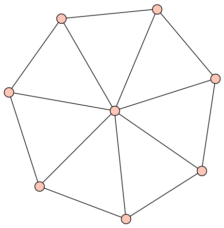
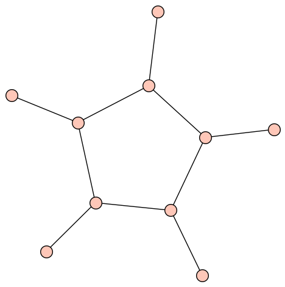

This page contains links to viewers for the cohomology of several graph complexes.
| Type | ||
|---|---|---|
|  | Kontsevich commutative graph complexes \(\mathsf{GC}_n\). | |
|  | Kontsevich commutative graph complexes with hairs \(\mathsf{HGC}_{m,n}\). | |
| Forested graph complexes. The elements are linear combinations of graphs with marked edges that form a forest. The corresponding graph complexes are quasi-isomorphic to the Feynman transform of the Lie (or degree shifted Lie) operad. | ||
| Graph complexes \(\tilde X_{g,n}\) occurring in the work of PayneWillwacher. |
|